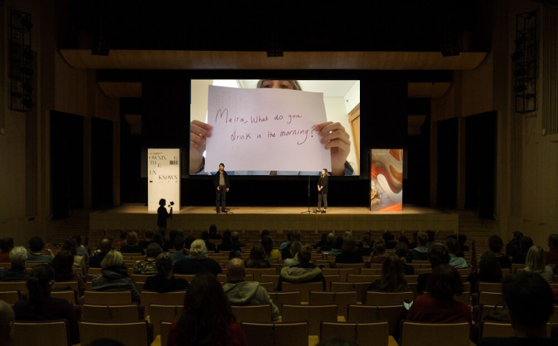

The 30MFF is a non-profit arts organization that was founded in 2020 by New York University Communcation Lab. 30MFF has grown into the world’s largest film festival for emerging directors. Each semester the festival showcases films by directors aged 24 and under. 30MFF supports young filmmakers by offering a platform to share their films made in 30 minutes. Within 30MFF lies a creative production company, 30MFF Lab, that connects brands with emerging talent to produce original content.
Hello, from Group 2 is a film produced by a group of independent film producers at NYUAD. The film reconstructs the overarching theme of Internet and Connection
linking individual videos together with sophisticated editing. Tackling complex issues such as Online classes and Zoom fatigues in surprising depth, the 4 directors create an honest depiction of NYUAD students surviving the 30 minutes of socially distanced anxiety and chaos, which should be praised for its insightful and moving nature.